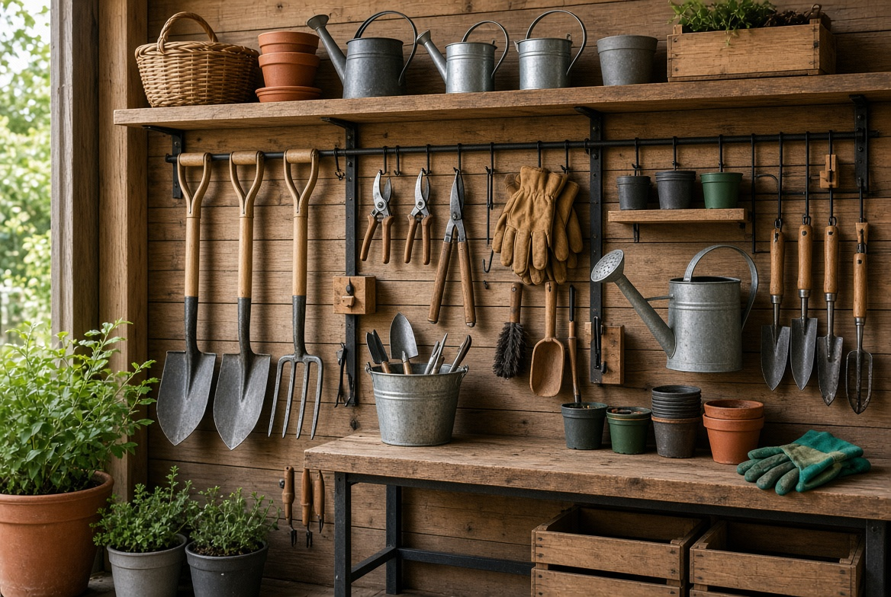

En este artículo
- Elige la mejor ubicación para el huerto
- Selecciona recipientes con buen drenaje
- Prepara un sustrato adecuado
- Empieza con cultivos apropiados para principiantes
- Aprende a regar observando el sustrato
- Crea una rutina sencilla de mantenimiento
- Cosecha y aprende de cada temporada
- Preguntas frecuentes
- Conclusión
Elige la mejor ubicación para el huerto
La ubicación condiciona gran parte del éxito de un huerto doméstico. Observa cuántas horas de luz directa recibe cada zona, cómo circula el aire y si tendrás agua cerca. Un balcón, una terraza, un patio o incluso una ventana amplia pueden funcionar si eliges cultivos compatibles.
Una decisión práctica antes de continuar
Antes de pasar al siguiente punto, revisa lo que ya tienes y define qué problema quieres resolver. En cómo crear un huerto en casa, una decisión sencilla y bien justificada suele aportar más que añadir elementos sin una función clara.
Al abordar cómo crear un huerto en casa, conviene observar primero las condiciones reales del espacio y no decidir únicamente por una fotografía o una tendencia. Registra la luz durante varios momentos del día. Esta revisión inicial ayuda a elegir soluciones proporcionadas, evita compras innecesarias y permite que cada cambio tenga una función concreta dentro del conjunto.
También es importante pensar en el uso cotidiano. Deja acceso cómodo para regar, revisar y cosechar. Una solución puede resultar atractiva el primer día y, sin embargo, convertirse en una molestia si exige demasiado mantenimiento, ocupa una zona de paso o no responde a las necesidades de quienes utilizan el espacio. Por eso, comodidad, durabilidad y facilidad de cuidado deben valorarse junto con la estética.
La planificación por etapas suele dar mejores resultados que intentar resolverlo todo de una vez. Empieza en una superficie pequeña que puedas atender con constancia. Después de cada cambio, observa durante algunos días cómo funciona antes de añadir nuevos elementos. Esta pausa permite detectar excesos, corregir la distribución y mantener un presupuesto más controlado.
Otro criterio útil es buscar coherencia sin caer en la uniformidad. En cómo crear un huerto en casa, los materiales, colores, alturas y texturas pueden ser diferentes, pero deberían compartir alguna relación visual o funcional. Repetir ciertos tonos, mantener proporciones equilibradas y dejar zonas de descanso visual ayuda a que el resultado parezca intencional y no una suma de decisiones aisladas.
Por último, recuerda que no existe una única fórmula válida. Las condiciones de luz, clima, superficie disponible, presupuesto y tiempo de mantenimiento cambian de una vivienda a otra. Adaptar estas recomendaciones a tu situación concreta es más importante que copiar un ejemplo exactamente. El objetivo es conseguir un resultado que siga funcionando bien después de varias semanas y no solamente durante los primeros días.
Selecciona recipientes con buen drenaje
Macetas, jardineras y mesas de cultivo permiten adaptar el huerto a espacios reducidos. Más importante que la apariencia es que el recipiente tenga volumen suficiente para las raíces y orificios que permitan evacuar el exceso de agua.
Una decisión práctica antes de continuar
Antes de pasar al siguiente punto, revisa lo que ya tienes y define qué problema quieres resolver. En cómo crear un huerto en casa, una decisión sencilla y bien justificada suele aportar más que añadir elementos sin una función clara.
Al abordar cómo crear un huerto en casa, conviene observar primero las condiciones reales del espacio y no decidir únicamente por una fotografía o una tendencia. Comprueba el drenaje antes de llenar los recipientes. Esta revisión inicial ayuda a elegir soluciones proporcionadas, evita compras innecesarias y permite que cada cambio tenga una función concreta dentro del conjunto.
También es importante pensar en el uso cotidiano. Ten en cuenta el peso final del sustrato húmedo. Una solución puede resultar atractiva el primer día y, sin embargo, convertirse en una molestia si exige demasiado mantenimiento, ocupa una zona de paso o no responde a las necesidades de quienes utilizan el espacio. Por eso, comodidad, durabilidad y facilidad de cuidado deben valorarse junto con la estética.
La planificación por etapas suele dar mejores resultados que intentar resolverlo todo de una vez. Agrupa recipientes con necesidades de riego similares. Después de cada cambio, observa durante algunos días cómo funciona antes de añadir nuevos elementos. Esta pausa permite detectar excesos, corregir la distribución y mantener un presupuesto más controlado.
Otro criterio útil es buscar coherencia sin caer en la uniformidad. En cómo crear un huerto en casa, los materiales, colores, alturas y texturas pueden ser diferentes, pero deberían compartir alguna relación visual o funcional. Repetir ciertos tonos, mantener proporciones equilibradas y dejar zonas de descanso visual ayuda a que el resultado parezca intencional y no una suma de decisiones aisladas.

Por último, recuerda que no existe una única fórmula válida. Las condiciones de luz, clima, superficie disponible, presupuesto y tiempo de mantenimiento cambian de una vivienda a otra. Adaptar estas recomendaciones a tu situación concreta es más importante que copiar un ejemplo exactamente. El objetivo es conseguir un resultado que siga funcionando bien después de varias semanas y no solamente durante los primeros días.
Prepara un sustrato adecuado
El suelo de una maceta necesita mantener humedad sin quedar constantemente encharcado y debe ofrecer estructura para las raíces. Utilizar un sustrato de calidad y renovarlo cuando pierde propiedades facilita el desarrollo de las plantas.
Una decisión práctica antes de continuar
Antes de pasar al siguiente punto, revisa lo que ya tienes y define qué problema quieres resolver. En cómo crear un huerto en casa, una decisión sencilla y bien justificada suele aportar más que añadir elementos sin una función clara.
Al abordar cómo crear un huerto en casa, conviene observar primero las condiciones reales del espacio y no decidir únicamente por una fotografía o una tendencia. Evita utilizar tierra compacta de cualquier lugar sin evaluar sus características. Esta revisión inicial ayuda a elegir soluciones proporcionadas, evita compras innecesarias y permite que cada cambio tenga una función concreta dentro del conjunto.
También es importante pensar en el uso cotidiano. No llenes las macetas hasta el borde para poder regar cómodamente. Una solución puede resultar atractiva el primer día y, sin embargo, convertirse en una molestia si exige demasiado mantenimiento, ocupa una zona de paso o no responde a las necesidades de quienes utilizan el espacio. Por eso, comodidad, durabilidad y facilidad de cuidado deben valorarse junto con la estética.
La planificación por etapas suele dar mejores resultados que intentar resolverlo todo de una vez. Añade materia orgánica de forma razonable según las necesidades del cultivo. Después de cada cambio, observa durante algunos días cómo funciona antes de añadir nuevos elementos. Esta pausa permite detectar excesos, corregir la distribución y mantener un presupuesto más controlado.
Otro criterio útil es buscar coherencia sin caer en la uniformidad. En cómo crear un huerto en casa, los materiales, colores, alturas y texturas pueden ser diferentes, pero deberían compartir alguna relación visual o funcional. Repetir ciertos tonos, mantener proporciones equilibradas y dejar zonas de descanso visual ayuda a que el resultado parezca intencional y no una suma de decisiones aisladas.
Por último, recuerda que no existe una única fórmula válida. Las condiciones de luz, clima, superficie disponible, presupuesto y tiempo de mantenimiento cambian de una vivienda a otra. Adaptar estas recomendaciones a tu situación concreta es más importante que copiar un ejemplo exactamente. El objetivo es conseguir un resultado que siga funcionando bien después de varias semanas y no solamente durante los primeros días.
Empieza con cultivos apropiados para principiantes
Lechugas, algunas hierbas aromáticas, rábanos y otros cultivos de ciclo relativamente sencillo pueden ser buenas opciones para aprender. La elección depende del clima, la estación y la cantidad de sol disponible.
Una decisión práctica antes de continuar
Antes de pasar al siguiente punto, revisa lo que ya tienes y define qué problema quieres resolver. En cómo crear un huerto en casa, una decisión sencilla y bien justificada suele aportar más que añadir elementos sin una función clara.
Al abordar cómo crear un huerto en casa, conviene observar primero las condiciones reales del espacio y no decidir únicamente por una fotografía o una tendencia. Consulta la época de siembra adecuada para tu región. Esta revisión inicial ayuda a elegir soluciones proporcionadas, evita compras innecesarias y permite que cada cambio tenga una función concreta dentro del conjunto.
También es importante pensar en el uso cotidiano. No plantes más de lo que puedes consumir y mantener. Una solución puede resultar atractiva el primer día y, sin embargo, convertirse en una molestia si exige demasiado mantenimiento, ocupa una zona de paso o no responde a las necesidades de quienes utilizan el espacio. Por eso, comodidad, durabilidad y facilidad de cuidado deben valorarse junto con la estética.

La planificación por etapas suele dar mejores resultados que intentar resolverlo todo de una vez. Combina cultivos de ciclos diferentes para repartir las cosechas. Después de cada cambio, observa durante algunos días cómo funciona antes de añadir nuevos elementos. Esta pausa permite detectar excesos, corregir la distribución y mantener un presupuesto más controlado.
Otro criterio útil es buscar coherencia sin caer en la uniformidad. En cómo crear un huerto en casa, los materiales, colores, alturas y texturas pueden ser diferentes, pero deberían compartir alguna relación visual o funcional. Repetir ciertos tonos, mantener proporciones equilibradas y dejar zonas de descanso visual ayuda a que el resultado parezca intencional y no una suma de decisiones aisladas.
Por último, recuerda que no existe una única fórmula válida. Las condiciones de luz, clima, superficie disponible, presupuesto y tiempo de mantenimiento cambian de una vivienda a otra. Adaptar estas recomendaciones a tu situación concreta es más importante que copiar un ejemplo exactamente. El objetivo es conseguir un resultado que siga funcionando bien después de varias semanas y no solamente durante los primeros días.
Aprende a regar observando el sustrato
Regar por calendario sin comprobar la humedad puede causar tanto falta como exceso de agua. Introducir un dedo en la capa superficial, observar el peso de las macetas y revisar el aspecto de las plantas ayuda a decidir cuándo intervenir.
Una decisión práctica antes de continuar
Antes de pasar al siguiente punto, revisa lo que ya tienes y define qué problema quieres resolver. En cómo crear un huerto en casa, una decisión sencilla y bien justificada suele aportar más que añadir elementos sin una función clara.
Al abordar cómo crear un huerto en casa, conviene observar primero las condiciones reales del espacio y no decidir únicamente por una fotografía o una tendencia. Riega de forma que el agua alcance la zona de raíces. Esta revisión inicial ayuda a elegir soluciones proporcionadas, evita compras innecesarias y permite que cada cambio tenga una función concreta dentro del conjunto.
También es importante pensar en el uso cotidiano. Evita mantener agua estancada de manera permanente. Una solución puede resultar atractiva el primer día y, sin embargo, convertirse en una molestia si exige demasiado mantenimiento, ocupa una zona de paso o no responde a las necesidades de quienes utilizan el espacio. Por eso, comodidad, durabilidad y facilidad de cuidado deben valorarse junto con la estética.
La planificación por etapas suele dar mejores resultados que intentar resolverlo todo de una vez. Ajusta la frecuencia cuando cambien temperatura, viento o tamaño de las plantas. Después de cada cambio, observa durante algunos días cómo funciona antes de añadir nuevos elementos. Esta pausa permite detectar excesos, corregir la distribución y mantener un presupuesto más controlado.
Otro criterio útil es buscar coherencia sin caer en la uniformidad. En cómo crear un huerto en casa, los materiales, colores, alturas y texturas pueden ser diferentes, pero deberían compartir alguna relación visual o funcional. Repetir ciertos tonos, mantener proporciones equilibradas y dejar zonas de descanso visual ayuda a que el resultado parezca intencional y no una suma de decisiones aisladas.
Por último, recuerda que no existe una única fórmula válida. Las condiciones de luz, clima, superficie disponible, presupuesto y tiempo de mantenimiento cambian de una vivienda a otra. Adaptar estas recomendaciones a tu situación concreta es más importante que copiar un ejemplo exactamente. El objetivo es conseguir un resultado que siga funcionando bien después de varias semanas y no solamente durante los primeros días.
Crea una rutina sencilla de mantenimiento
Un huerto pequeño puede mantenerse con revisiones breves y frecuentes. Retirar hojas dañadas, observar plagas, guiar tallos y cosechar a tiempo evita que pequeños problemas se acumulen.
Una decisión práctica antes de continuar
Antes de pasar al siguiente punto, revisa lo que ya tienes y define qué problema quieres resolver. En cómo crear un huerto en casa, una decisión sencilla y bien justificada suele aportar más que añadir elementos sin una función clara.

Al abordar cómo crear un huerto en casa, conviene observar primero las condiciones reales del espacio y no decidir únicamente por una fotografía o una tendencia. Dedica unos minutos varias veces por semana a observar. Esta revisión inicial ayuda a elegir soluciones proporcionadas, evita compras innecesarias y permite que cada cambio tenga una función concreta dentro del conjunto.
También es importante pensar en el uso cotidiano. Actúa temprano ante síntomas en lugar de aplicar soluciones indiscriminadas. Una solución puede resultar atractiva el primer día y, sin embargo, convertirse en una molestia si exige demasiado mantenimiento, ocupa una zona de paso o no responde a las necesidades de quienes utilizan el espacio. Por eso, comodidad, durabilidad y facilidad de cuidado deben valorarse junto con la estética.
La planificación por etapas suele dar mejores resultados que intentar resolverlo todo de una vez. Lleva notas simples de siembra, riego y cosecha. Después de cada cambio, observa durante algunos días cómo funciona antes de añadir nuevos elementos. Esta pausa permite detectar excesos, corregir la distribución y mantener un presupuesto más controlado.
Otro criterio útil es buscar coherencia sin caer en la uniformidad. En cómo crear un huerto en casa, los materiales, colores, alturas y texturas pueden ser diferentes, pero deberían compartir alguna relación visual o funcional. Repetir ciertos tonos, mantener proporciones equilibradas y dejar zonas de descanso visual ayuda a que el resultado parezca intencional y no una suma de decisiones aisladas.
Por último, recuerda que no existe una única fórmula válida. Las condiciones de luz, clima, superficie disponible, presupuesto y tiempo de mantenimiento cambian de una vivienda a otra. Adaptar estas recomendaciones a tu situación concreta es más importante que copiar un ejemplo exactamente. El objetivo es conseguir un resultado que siga funcionando bien después de varias semanas y no solamente durante los primeros días.
Cosecha y aprende de cada temporada
La cosecha es también una fuente de información. El tamaño, sabor y cantidad obtenidos muestran qué cultivos se adaptaron mejor al espacio y cuáles conviene cambiar en la siguiente temporada.
Una decisión práctica antes de continuar
Antes de pasar al siguiente punto, revisa lo que ya tienes y define qué problema quieres resolver. En cómo crear un huerto en casa, una decisión sencilla y bien justificada suele aportar más que añadir elementos sin una función clara.
Al abordar cómo crear un huerto en casa, conviene observar primero las condiciones reales del espacio y no decidir únicamente por una fotografía o una tendencia. Cosecha en el momento adecuado para cada especie. Esta revisión inicial ayuda a elegir soluciones proporcionadas, evita compras innecesarias y permite que cada cambio tenga una función concreta dentro del conjunto.
También es importante pensar en el uso cotidiano. Registra qué variedades funcionaron mejor. Una solución puede resultar atractiva el primer día y, sin embargo, convertirse en una molestia si exige demasiado mantenimiento, ocupa una zona de paso o no responde a las necesidades de quienes utilizan el espacio. Por eso, comodidad, durabilidad y facilidad de cuidado deben valorarse junto con la estética.
La planificación por etapas suele dar mejores resultados que intentar resolverlo todo de una vez. Utiliza los resultados para planificar la siguiente siembra. Después de cada cambio, observa durante algunos días cómo funciona antes de añadir nuevos elementos. Esta pausa permite detectar excesos, corregir la distribución y mantener un presupuesto más controlado.
Otro criterio útil es buscar coherencia sin caer en la uniformidad. En cómo crear un huerto en casa, los materiales, colores, alturas y texturas pueden ser diferentes, pero deberían compartir alguna relación visual o funcional. Repetir ciertos tonos, mantener proporciones equilibradas y dejar zonas de descanso visual ayuda a que el resultado parezca intencional y no una suma de decisiones aisladas.
Por último, recuerda que no existe una única fórmula válida. Las condiciones de luz, clima, superficie disponible, presupuesto y tiempo de mantenimiento cambian de una vivienda a otra. Adaptar estas recomendaciones a tu situación concreta es más importante que copiar un ejemplo exactamente. El objetivo es conseguir un resultado que siga funcionando bien después de varias semanas y no solamente durante los primeros días.
Preguntas frecuentes
¿Cuánto espacio necesito para empezar un huerto?
Puedes comenzar con unas pocas macetas si reciben la luz necesaria y tienen recipientes adecuados.
¿Qué puedo cultivar si tengo poco sol?
Depende de las horas de luz y del clima; algunas hojas y aromáticas toleran menos sol que cultivos que producen frutos.
¿Es necesario utilizar fertilizante?
Las plantas en recipientes agotan nutrientes con el tiempo. La fertilización debe adaptarse al cultivo, al sustrato y a las instrucciones del producto utilizado.
Conclusión
Crear un huerto en casa es más sencillo cuando se empieza pequeño y se aprende observando. Una ubicación adecuada, recipientes con drenaje, buen sustrato y cultivos compatibles con el clima forman una base sólida. Mantén una rutina breve, ajusta el riego según las condiciones y utiliza cada cosecha como aprendizaje para la siguiente temporada.